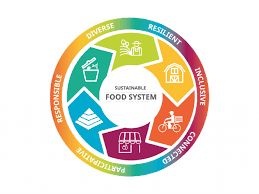
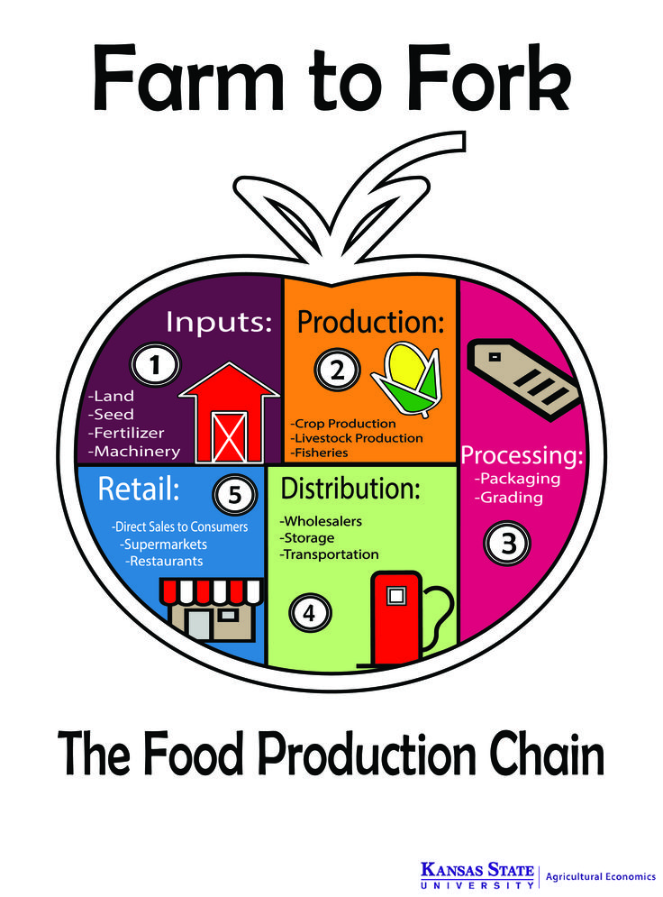

Why Sustainable Food Services ??
Our food services aim to reduce environmental impact by adopting sustainable practices. From sourcing locally grown ingredients to reducing food waste, we are committed to creating a better future for our planet.
Farm-to-Table Ingredients
We believe in supporting local farmers and ensuring that all our ingredients are fresh and sustainably grown. This practice not only helps the environment but also delivers fresher and tastier meals to you.
Reducing Food Waste
Our food services have implemented strict measures to minimize food waste by smart planning and portion control. We donate surplus food to local charities and compost organic waste to contribute to the circular economy.